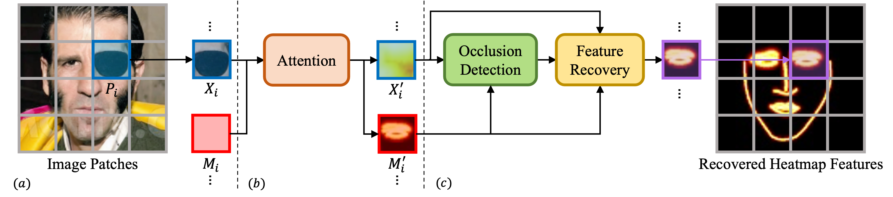

ORFormer: Occlusion-Robust Transformer for Accurate Facial Landmark Detection WACV 2025
- Jui-Che Chiang NYCU, NVIDIA
- Hou-Ning Hu MediaTek
- Bo-Syuan Hou NYCU
- Chia-Yu Tseng NYCU
- Yu-Lun Liu NYCU
- Min-Hung Chen NVIDIA
- Yen-Yu Lin NYCU

Abstract
Although facial landmark detection (FLD) has gained significant progress, existing FLD methods still suffer from performance drops on partially non-visible faces, such as faces with occlusions or under extreme lighting conditions or poses. To address this issue, we introduce ORFormer, a novel transformer-based method that can detect non-visible regions and recover their missing features from visible parts. Specifically, ORFormer associates each image patch token with one additional learnable token called the messenger token. The messenger token aggregates features from all but its patch. This way, the consensus between a patch and other patches can be assessed by referring to the similarity between its regular and messenger embeddings, enabling non-visible region identification. Our method then recovers occluded patches with features aggregated by the messenger tokens. Leveraging the recovered features, ORFormer compiles high-quality heatmaps for the downstream FLD task. Extensive experiments show that our method generates heatmaps resilient to partial occlusions. By inte- grating the resultant heatmaps into existing FLD methods, our method performs favorably against the state of the arts on challenging datasets such as WFLW and COFW.
Overview
(a) We first train a quantized heatmap generator, which takes an image I as input and generates its edge heatmaps H. After pre-training, the prior knowledge of unoccluded faces is encoded in the codebook C and decoder D. (b) With the frozen codebook and decoder, we introduce ORFormer to generate the occlusion map α and two code sequences SI and SM, leading to quantized features ZI and ZM. The recovered feature Zrecis yielded by merging ZI and SM with patch-specific weights given in α, and is used to produce occlusion-robust heatmaps Hrec.
Occlusion-Robust Transformer (ORFormer)
ORFormer takes image patches P as input and generates two code sequences SI and SM via the codebook prediction head. While SI is computed by referring to the image patch tokens, SM is by the messenger tokens. The occlusion map α represents the patch-specific occlusion likelihood and is inferred by the occlusion detection head.
Integration with FLD
ORFormer is adopted for occlusion detection and feature recovery, resulting in high-quality heatmaps. The generated heatmaps serve as an extra input to an FLD method, and offer the recovered features to make the FLD method robust to occlusions..
Evaluation results (3.3G)


We provide a ZIP file containing each compared method's results and the Matlab script for the evaluation of two datasets: the VDS dataset and the HDREye dataset. You can download the ZIP file and run the script to get the PSNR, HDR-VDP-2 score for the tone-mapped image, and HDR file.
Quantitative results
| Dataset | Method | PSNR | PSNR | HDR-VDP-2 | |||
|---|---|---|---|---|---|---|---|
| RH's TMO | KK's TMO | ||||||
| mean | std | mean | std | mean | std | ||
| VDS | DrTMO | 25.49 | 4.28 | 21.36 | 4.50 | 54.33 | 6.27 |
| Deep chain HDRi | 30.86 | 3.36 | 24.54 | 4.01 | 56.36 | 4.41 | |
| Deep recursive HDRI | 32.99 | 2.81 | 28.02 | 3.50 | 57.15 | 4.35 | |
| Santos et al. | 22.56 | 2.68 | 18.23 | 3.53 | 53.51 | 4.76 | |
| Liu et al. | 30.89 | 3.27 | 28.00 | 4.11 | 56.97 | 6.15 | |
| CEVR (Ours) | 34.67 |
3.50 | 30.04 |
4.45 | 59.00 |
5.78 | |
| HDREye | DrTMO | 23.68 | 3.27 | 19.97 | 4.11 | 46.67 | 5.81 |
| Deep chain HDRi | 25.77 | 2.44 | 22.62 | 3.39 | 49.80 | 5.97 | |
| Deep recursive HDRI | 26.28 | 2.70 | 24.62 | 2.90 | 52.63 | 4.84 | |
| Santos et al. | 19.89 | 2.46 | 19.00 | 3.06 | 49.97 | 5.44 | |
| Liu et al. | 26.25 | 3.08 | 24.67 | 3.54 | 50.33 | 6.67 | |
| CEVR (Ours) | 26.54 |
3.10 | 24.81 |
2.91 | 53.15 |
4.91 | |
Compared to other existing methods, our work demonstrates competitive performance.
Citation
Acknowledgements
This work was supported in part by the National Science and Technology Council (NSTC) under grants 112-2221-E-A49-090-MY3, 111-2628-E-A49-025-MY3, 112-2634-F-006-002, and 113-2640-E-006-006. This work was funded in part by MediaTek.
The website template was borrowed from Zip-NeRF.